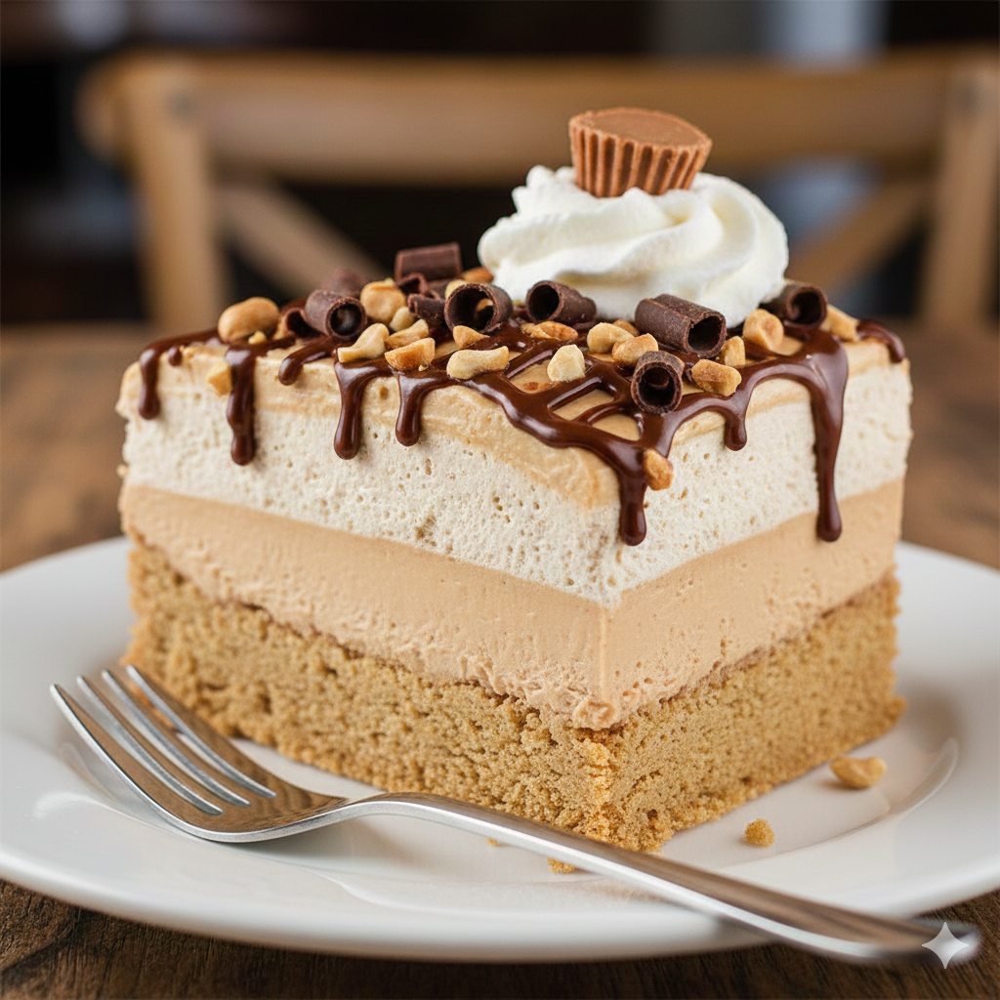

No-Bake Peanut Butter Pie
Ingredients
| Ingredient | Amount |
|---|---|
| Graham cracker crust | 1 (9-inch) |
| Creamy peanut butter | 1 cup |
| Cream cheese (softened) | 8 oz |
| Powdered sugar | 1 cup |
| Cool Whip (thawed) | 8 oz |
Instructions
- Beat peanut butter and cream cheese until smooth.
- Add powdered sugar and mix well.
- Fold in Cool Whip until fluffy.
- Spoon into crust and smooth top.
- Chill 2 to 3 hours or overnight.
- Garnish with toppings if desired.